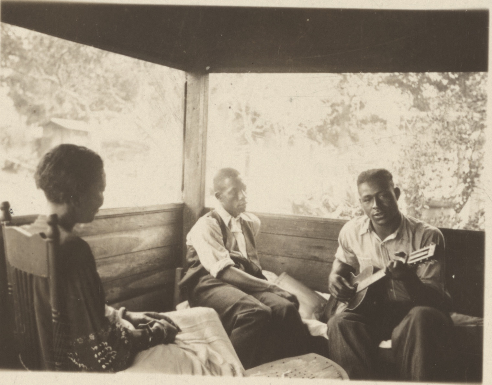
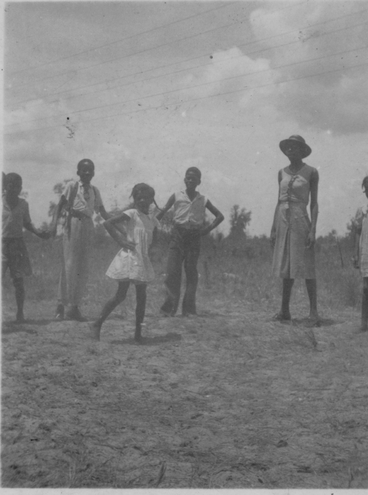
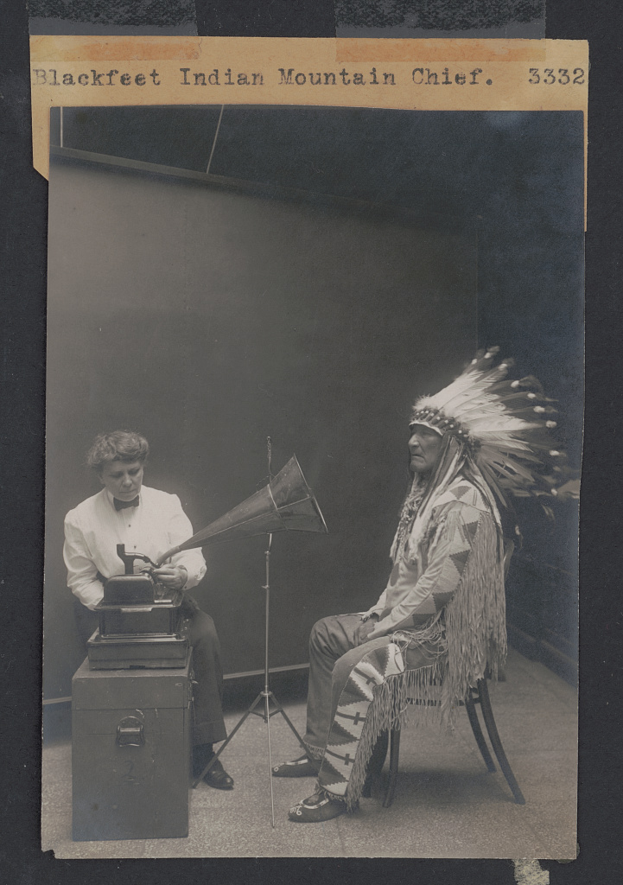

01 · What myth means
Myth helps people live inside a larger world.
Myths are not only stories about a distant past. They are among the forms through which people connect ordinary life to a wider order: to ancestors and landscapes, to duties and dangers, and to questions that no life escapes.
In different communities, narratives that scholars group under the word myth may be sacred histories, teachings, genealogies, songs, warnings, or forms named in their own languages. They can carry memory and belonging across generations. They can make origin, kinship, suffering, obligation, and mortality discussable. No single function belongs to every story; meaning depends on who tells it, who may hear it, when it is performed, and what relationships it sustains.

Before a narrative becomes an entry in an archive, it exists in scenes like this one: among people, in a place, carried by voice, gesture, memory, music, and attention. A catalogue can preserve evidence that a story was recorded. It cannot fully preserve the relationships that gave the telling meaning.
“Folklore is the boiled-down juice of human living.”
That human work is the beginning of this study: not the search for one universal tale, but an inquiry into how distinct stories can remain culturally situated while still speaking to recurring human concerns.
02 · The value of myth
Stories give elemental questions a form.
The archive repeatedly returns to moments when the world is unfinished: before there is dry ground, before sky and earth have settled into place, before fire belongs to human beings, and before death has become inevitable.
Some narratives begin with water. Land grows, rises, or is brought upward by a diving being. Others look to the sky, giving the Sun and Moon relationships and placing eclipses, distance, light, and darkness inside an ordered cosmos. Such stories do more than supply explanations. They turn a landscape and a sky into fields of relation—places where human beings must learn how to live.
Other narratives move through kinship and transformation. A spouse may cross the boundary between animal and human; a secret may be overheard; a trickster may expose the cost of deception. Stories of stolen fire, first people, food plants, rocks, caves, and emergence place human life within a world that is already active and inhabited. Nature is not merely scenery. It is part of the social and moral situation.
Even death can enter through narrative action: a delayed message, a changed instruction, or a messenger who fails. An irreversible fact becomes an event with causes and consequences—something that can be questioned, remembered, and mourned.
Boundary: these are recurring emphases in English catalogue descriptions—not fragments of one original story, universal stages of thought, or community-authored categories.
The value of these stories does not depend on their remaining unchanged. A tradition stays living because people continue to give it form in new circumstances.
03 · How myth is changing
Living traditions survive by changing.
Every telling carries a past into a new present. A performer responds to an audience. A family retells for a new generation. A community gives an inherited form new work to do. Variation is not automatically damage; it is often evidence that a narrative remains in use.

This historical photograph makes transmission visible as an activity rather than an object. The game passes through bodies, observation, rhythm, participation, and repetition. No database row can contain that entire process, because the process is the relationship among the participants.
Today, migration, language shift, broadcast media, and digital circulation can bring stories to audiences far beyond the place of telling. That reach can create renewal, connection, and new forms of participation. It can also thin context. A narrative may become easier to find while its language, occasion, teller, or cultural authority becomes harder to see.
Change therefore has more than one meaning. It can be creative adaptation, but it can also follow interruption or displacement. Wider circulation is not the same as fuller understanding. The essential questions are who shapes the change, what travels with the story, and what is left behind.
When the relationships that carry a tradition become fragile, communities and institutions often turn to recordings, transcriptions, inventories, and catalogues. These can keep selected traces within reach.
04 · Preservation and cataloguing
Searchability lets cultural traces travel through time.
Recordings, photographs, transcriptions, translations, indexes, and databases can outlive an encounter. They allow later generations to find dispersed material and permit questions that no single reader could answer unaided.
Cataloguing is one way institutions support preservation at scale. It is not the only way, and it cannot replace the living social life of a tradition. Its particular value is retrievability: an index gives later readers a name to search, a record to locate, and a way to recognize recurrence across a large collection.
Twentieth-century folklore indexes organized recurring tale types and motifs into comparative systems. The Berezkin–Duvakin Electronic Analytical Catalogue extends that lineage in digital form. This study analyzes one frozen export: 926 catalogue records represented through 2,138 recorded motif variables. Those records are not 926 complete cultures or complete bodies of tradition. They are selected traces shaped by collection and classification.
Text alternative
The map displays the same 926 records using three analytical overlays: sixteen broad regions, four exact-motif groups, and five provisional thematic groups.
A catalogue gives later readers something to find. At the same time, it gives them a particular way to see. Preservation and interpretation begin together.
05 · The unintended cost
Every catalogue carries a point of view.
To classify is to choose a name, a unit, a language, and a boundary. Those choices make comparison possible. They also decide which parts of a narrative will remain visible to later readers.

This photograph was once described as Densmore recording Mountain Chief. The Library of Congress later corrected the record: the horn is for playback, and Densmore’s annotation said they were listening. The encounter did not change, but the archival account of what viewers were seeing did. Metadata does not merely label evidence. It interprets it.
A motif title makes a similar reduction. It cannot preserve tone, gesture, audience, disagreement, sacred restriction, or a teller’s reason for speaking. Translation and editorial language enter the record as well. What becomes searchable is valuable, but it is never identical to the source narrative or its performance context.
“Each standard and each category valorizes some point of view and silences another.”
A blank cell in this study means only that a motif was not recorded in the frozen export. It does not prove that a community lacks the narrative. Uneven documentation must not be treated as evidence that one tradition is richer, more complex, or more creative than another.
Boundary: these networks organize records in an archive. They do not classify cultures, and a motif is a trace—not the story itself.
These limits are not a reason to abandon comparison. They change the question: which patterns survive when the meaning of similarity changes?
06 · The findings
One archive, two readings, one revealing fault line.
The same 926 records were organized through two complete analytical lenses. One asks whether records share the same recorded motif codes. The other asks whether English motif titles and descriptions produce similar thematic profiles.
The exact-motif reading protects the grain of recorded detail: “Primeval sky close to earth” and “Theft of fire” remain distinct catalogue elements. The thematic reading steps back. It can recognize that different elements participate in a related balance of water, conflict, world-order, kinship, transformation, mortality, or landscape. Neither reading is the archive’s one true shape.
Text alternative
The exact-motif reading produces four connected groups. The provisional thematic reading produces five groups. Their large-scale structures overlap substantially but do not match.
The result lies between total agreement and total disagreement. Three large regions of the archive remain recognizable under both lenses, producing a shared structure stronger than the controlled chance comparisons. Representation matters, but it does not erase everything the two readings hold in common.
The main difference appears inside the largest exact-motif group. Under the thematic lens, it divides principally between two emphases. One looks toward the Sun, Moon, eclipses, sky, earth, and world-order. The other leans toward first people, plants and beings, trees, rocks, climbing, and terrestrial life. These are relative emphases in catalogue language—not “celestial peoples” and “terrestrial peoples.”
Text alternative
Three exact-motif groups map strongly onto three thematic groups. The largest exact-motif group instead divides principally between two thematic groups.
Context narrows the conclusion. The striking list of individual motif differences weakens after broad geography and uneven documentation are taken into account. The broader thematic contrast persists. What the evidence supports is a difference in aggregate emphasis, not a new classification of peoples, civilizations, or worldviews.
Boundary: the networks identify patterns that require explanation. They do not prove migration, borrowing, common ancestry, environmental cause, direction of transmission, or an original homeland.
Explore further: theme contrasts, geographic composition, group profiles, climate context, and latitude distributions.
07 · What it means for society
Similarity without sameness. Difference without isolation.
The paired reading resists two ways of misunderstanding cultural difference.
Homogenization turns culturally distinct narratives into interchangeable versions of one universal story. It notices recurrence but forgets that meaning is carried through particular languages, landscapes, histories, relationships, and systems of knowledge.
Fragmentation makes the opposite mistake. It treats every tradition as sealed from every other and makes recurring human questions impossible to recognize. It protects difference by denying relationship.
The two readings keep both truths in view. Exact motifs protect the grain of recorded specificity. Broader themes reveal echoes that exact labels can miss. The study’s strongest contribution is therefore not a final map of mythology. It is a method for asking which patterns remain stable, which depend on the lens, and what each representation leaves outside its frame.
This is a methodological implication, not a measured result about present-day technology: archives, search systems, classrooms, and AI systems all make decisions about what counts as “the same.” A system that merges related language too quickly can flatten distinct knowledge into generic content. A system that recognizes only exact wording can hide meaningful relationships.
Responsible comparison should identify its lens, preserve provenance and uncertainty, and return questions of meaning and authority to the communities whose knowledge is being represented. Computational patterns can guide historical, linguistic, archaeological, ecological, ethnographic, and community-grounded inquiry. They cannot replace it.
The networks show where to ask and listen next. They do not decide what a story means.